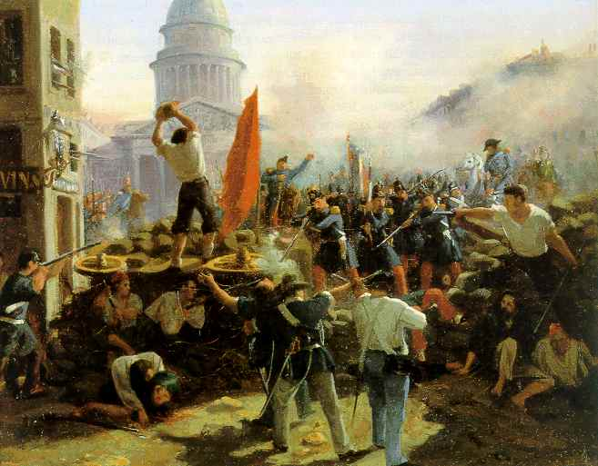

最近、アイデアの世界を探索する為に、「共産党宣言」を読みました。高校の時、19世紀のフランスの政治についてカール・マルクスの書籍を読んだことがあったんですが、一番印象に残っている概念は階級闘争でした。手短に歴史を理解する為には、人物に注目しない方がよい、社会の階層の有益性や競争を重要視した方がいい、ということです。
今回、共産党宣言を読んで、他のアイデアに気付きました。19世紀中頃、マルクスは、西欧の革命に積極な役割をするブルジョワジーを分析しています。ブルジョワジーというのは、中産階級の事であり、貴族の所有体制に対して私的所有権を説く階層でした。ブルジョワ社会の指導原理は、私的所有権と賃金体制のことです。
その議論を読んでよかったと思います。現代の社会は同じ原理に基づいているんですが、あまり議論されていません。19世紀中頃には、その通りではありませんでした。しかも、今広がっている社会の問題では、家族の分離や少子化など、私的所有権と消費体制の基礎原理とは関係があると考えます。その原理を全く議論しないでどうやっていろいろな事が分かったり、なぞがとか解けるのかなと思います。

(Horace Vernet - Barricade rue Soufflot)
Discussion ¶
Feel free to post a comment by e-mail using the form below. Your e-mail address will not be disclosed.